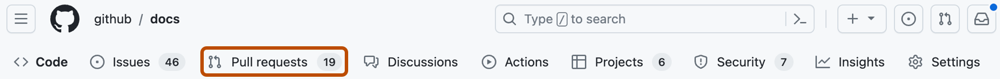

You manage pull requests raised by Dependabot in much the same way as other pull requests, but there are some extra options.
On GitHub, navigate to the main page of the repository.
Under your repository name, click Pull requests.

Any pull requests for security or version updates are easy to identify.
dependencies label.By default, Dependabot automatically rebases pull requests to resolve any conflicts. If a pull request has not been merged for 30 days, Dependabot will stop rebasing the pull request. You can still manually rebase and merge the pull request. If you'd prefer to handle merge conflicts manually, you can disable this using the rebase-strategy option. For details, see Dependabot options reference.
By default, Dependabot will stop rebasing a pull request once extra commits have been pushed to it. To allow Dependabot to force push over commits added to its branches, include any of the following strings: [dependabot skip] , [skip dependabot], [dependabot-skip], or [skip-dependabot], in either lower or uppercase, to the commit message.
You can use comment commands on Dependabot pull requests to manage and customize your dependency updates. For details, see Dependabot pull request comment commands.
Dependabot will react with a "thumbs up" emoji to acknowledge the command, and may respond with a comment on the pull request. While Dependabot usually responds quickly, some commands may take several minutes to complete if Dependabot is busy processing other updates or commands.
If you run any of the commands for ignoring dependencies or versions, Dependabot stores the preferences for the repository centrally. While this is a quick solution, for repositories with more than one contributor it is better to explicitly define the dependencies and versions to ignore in the configuration file. This makes it easy for all contributors to see why a particular dependency isn't being updated automatically.
For more information, see Dependabot options reference.